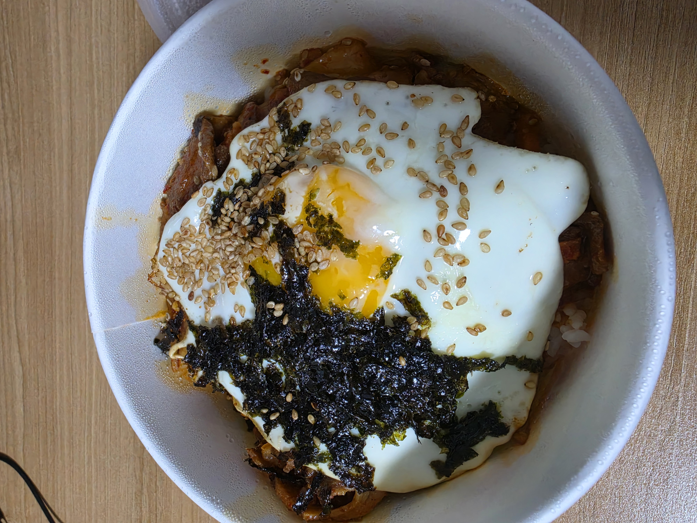

건강을 책임지는 헬스장

건강을 위해 찾는 장소
일주일에 제일 많이 가는 장소 중 하나
육체적인 건강뿐만 아니라 스트레스 해소를 하기에도 좋습니다.
찾아가는 방법
김수환관 1층에 위치해 있으며 카페멘사를 지나 체육관 입구 왼쪽에 위치하고 있습니다.
헬스장 정보
평일 - 07:00 ~ 22:30
토요일 - 09:30 ~ 18:00
좋아하는 길

사람이 많이 다니지 않아 편한 길
안정감을 느끼는 길
양 옆이 벽과 건물로 막혀있고 사람이 많이 다니지 않아 편합니다.
찾아가는 방법
신데렐라계단을 올라와서 쭉 가다가 오른쪽에 비르투스관 뒤쪽에 위치해 있습니다.
여기에서 해볼 것
길에 진입하기 전 광장에서부터 천천히 걸어와보기
돌계단이 깨진 곳이 있어 오를 때 조심하기
자주가는 가게 꼬밥

끼니를 챙기러 자주 가는 음식점
자주 가기도 하고 살갑게 대해주심
끼니를 챙기로 자주 방문해 아주머니랑 수다를 떱니다.
찾아가는 방법
캠퍼스를 정문으로 나가서 길을 건넌 뒤 왼쪽으로 쭉 가다보면 교회 전에 위치해 있습니다.
자주 먹는 메뉴
제육덮밥
삼겹살 덮밥